Nuovi materiali
Qui compaiono per prime le mie schede più recenti. L'elenco si aggiorna automaticamente.
48 materiali
Laboratorio delle fiabe: Frau Holle – Disegni da colorare e domino, classi 1–4 (gratis)
Laboratorio delle fiabe: Frau Holle – Disegni da colorare e domino, classi 1–4 (gratis)
Laboratorio delle fiabe: La Bella Addormentata – Disegni da colorare e domino, classi 1–4 (gratis)
Laboratorio delle fiabe: La Bella Addormentata – Disegni da colorare e domino, classi 1–4 (gratis)
Laboratorio delle fiabe: Cenerentola – Disegni da colorare e domino, classi 1–4 (gratis)
Laboratorio delle fiabe: Cenerentola – Disegni da colorare e domino, classi 1–4 (gratis)
Laboratorio delle fiabe: Biancaneve – Disegni da colorare e domino, classi 1–4 (gratis)
Laboratorio delle fiabe: Biancaneve – Disegni da colorare e domino, classi 1–4 (gratis)
Laboratorio delle fiabe: Hansel e Gretel – Disegni da colorare e domino, classi 1–4 (gratis)
Laboratorio delle fiabe: Hansel e Gretel – Disegni da colorare e domino, classi 1–4 (gratis)
Laboratorio delle fiabe: Cappuccetto Rosso – Disegni da colorare e domino, classi 1–4 (gratis)
Laboratorio delle fiabe: Cappuccetto Rosso – Disegni da colorare e domino, classi 1–4 (gratis)
Laboratorio delle fiabe: Frau Holle – Pacchetto Plus con domino, leggi e incolla, testo, classi 1–4
Laboratorio delle fiabe: Frau Holle – Pacchetto Plus con domino, leggi e incolla, testo, classi 1–4
Laboratorio delle fiabe: La Bella Addormentata Pacchetto Plus
Laboratorio delle fiabe: La Bella Addormentata Pacchetto Plus
Laboratorio delle fiabe: Cenerentola – Pacchetto Plus con domino, leggi e incolla, testo, classi 1–4
Laboratorio delle fiabe: Cenerentola – Pacchetto Plus con domino, leggi e incolla, testo, classi 1–4
Laboratorio delle fiabe: Biancaneve – Pacchetto Plus con domino, leggi e incolla, testo, classi 1–4
Laboratorio delle fiabe: Biancaneve – Pacchetto Plus con domino, leggi e incolla, testo, classi 1–4
Laboratorio delle fiabe: Hansel e Gretel Pacchetto Plus
Laboratorio delle fiabe: Hansel e Gretel Pacchetto Plus
Laboratorio delle fiabe: Cappuccetto Rosso Pacchetto Plus
Laboratorio delle fiabe: Cappuccetto Rosso Pacchetto Plus
Laboratorio dei personaggi: Picasso
Laboratorio dei personaggi: Picasso – Scheda da leggere e completare, classi 3ª–4ª primaria (gratis)
Laboratorio dei personaggi: Picasso Pacchetto Plus
Laboratorio dei personaggi: Picasso Pacchetto Plus
Laboratorio dei personaggi: Zeus
Laboratorio dei personaggi: Zeus – Scheda da leggere e completare, classi 3ª–4ª primaria (gratis)
Laboratorio dei personaggi: Helen Keller Scheda
Laboratorio dei personaggi: Helen Keller Scheda
Laboratorio dei personaggi: Rosa Parks Scheda
Laboratorio dei personaggi: Rosa Parks Scheda
Laboratorio dei personaggi: Zeus Pacchetto Plus
Laboratorio dei personaggi: Zeus Pacchetto Plus
Laboratorio dei personaggi: Helen Keller Pacchetto Plus
Laboratorio dei personaggi: Helen Keller Pacchetto Plus
Laboratorio dei personaggi: Rosa Parks Pacchetto Plus
Laboratorio dei personaggi: Rosa Parks Pacchetto Plus
Laboratorio dei personaggi: Marie Curie Scheda
Laboratorio dei personaggi: Marie Curie Scheda
Laboratorio dei personaggi: Mozart
Laboratorio dei personaggi: Mozart – Scheda da leggere e completare, classi 3ª–4ª primaria (gratis)
Laboratorio dei personaggi: Marie Curie Pacchetto Plus
Laboratorio dei personaggi: Marie Curie Pacchetto Plus
Laboratorio dei personaggi: Mozart Pacchetto Plus
Laboratorio dei personaggi: Mozart Pacchetto Plus
Laboratorio di carte: Gli animali domestici – gioco di memoria immagini e parole (GRATIS)
Laboratorio di carte: Gli animali domestici – gioco di memoria immagini e parole (GRATIS)
Laboratorio di carte: Gli animali domestici – carte immagine e parola con frasi modello (GRATIS)
Laboratorio di carte: Gli animali domestici – carte immagine e parola con frasi modello (GRATIS)
Laboratorio di carte: Le emozioni – gioco di memoria immagini e parole (GRATIS), classi 1-3
Laboratorio di carte: Le emozioni – gioco di memoria immagini e parole (GRATIS), classi 1-3
Laboratorio di carte: Le emozioni – carte immagine e parola, frasi modello (GRATIS), classi 1-3
Laboratorio di carte: Le emozioni – carte immagine e parola, frasi modello (GRATIS), classi 1-3

Laboratorio delle fiabe: Frau Holle – Disegni da colorare e domino (GRATIS)
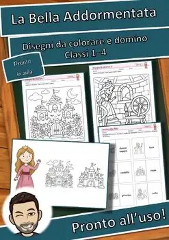
Laboratorio delle fiabe: La Bella Addormentata da colorare (GRATIS)
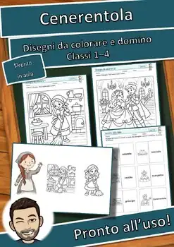
Laboratorio delle fiabe: Cenerentola – Disegni da colorare e domino (GRATIS)
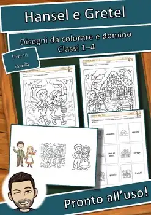
Laboratorio delle fiabe: Hansel e Gretel – Disegni da colorare e domino (GRATIS)
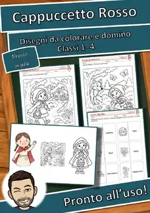
Laboratorio delle fiabe: Cappuccetto Rosso da colorare (GRATIS)
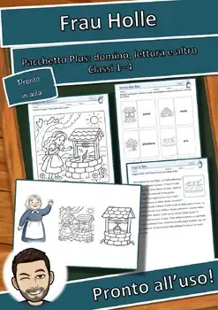
Laboratorio delle fiabe: Frau Holle Pacchetto Plus
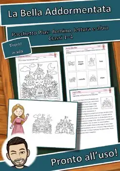
Laboratorio delle fiabe: La Bella Addormentata Pacchetto Plus
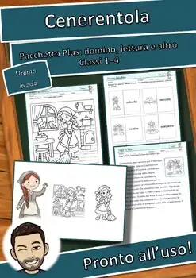
Laboratorio delle fiabe: Cenerentola Pacchetto Plus
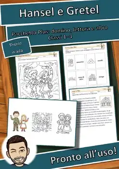
Laboratorio delle fiabe: Hansel e Gretel Pacchetto Plus
Laboratorio delle fiabe: Cappuccetto Rosso Pacchetto Plus
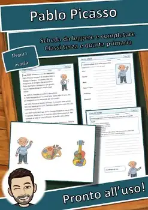
Laboratorio dei personaggi: Picasso – Scheda da leggere e completare (GRATIS)
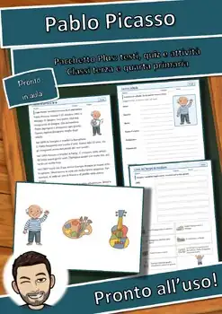
Laboratorio dei personaggi: Picasso – Pacchetto Plus: testi, quiz e attività
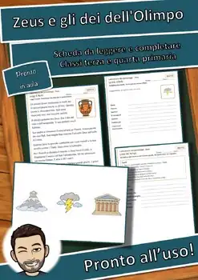
Laboratorio dei personaggi: Zeus – Scheda da leggere e completare (GRATIS)
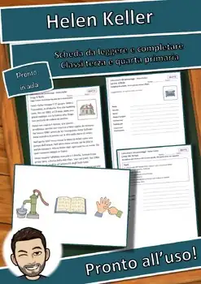
Laboratorio dei personaggi: Helen Keller Scheda (GRATIS)
Laboratorio di carte: Gli animali domestici PLUS – carte con mollette, frasi da completare, verifica
Laboratorio di carte: Gli animali domestici PLUS – carte con mollette, frasi da completare, verifica
Laboratorio di carte: Le emozioni PLUS – carte con mollette, frasi da completare, verifica
Laboratorio di carte: Le emozioni PLUS – carte con mollette, frasi da completare, verifica
Cartoline delle vacanze Volpe: mascotte della classe, scrittura su 3 livelli
Cartoline delle vacanze Volpe: mascotte della classe, scrittura su 3 livelli
Cartelli di gruppo Volpe: mascotte della classe e carte dei ruoli, I-IV primaria
Cartelli di gruppo Volpe: mascotte della classe e carte dei ruoli, I-IV primaria
Cartoline delle vacanze Gufo: mascotte della classe, scrittura su 3 livelli
Cartoline delle vacanze Gufo: mascotte della classe, scrittura su 3 livelli
Cartelli di gruppo Gufo: mascotte della classe e carte dei ruoli, I-IV primaria
Cartelli di gruppo Gufo: mascotte della classe e carte dei ruoli, I-IV primaria
Nessun materiale trovato: prova con un'altra parola o un altro filtro.